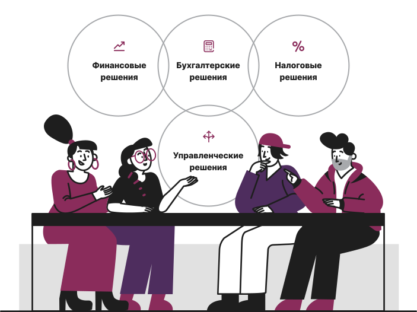
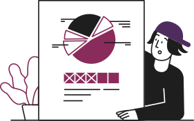
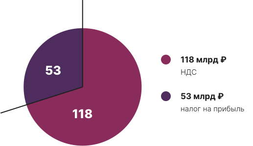
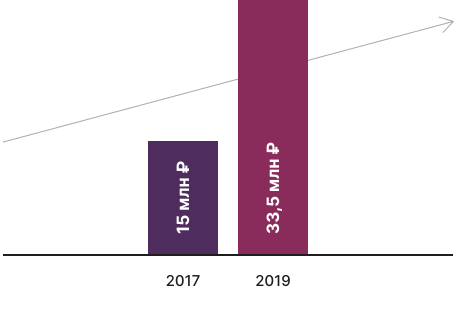
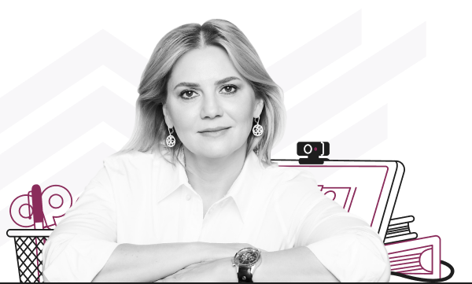
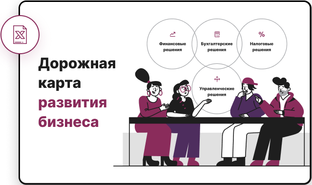

Онлайн-диагностика для владельцев бизнеса от Натальи Ненашевой и команды экспертов «TOPLINE»
Пройдите тест за 5 минут, пообщайтесь со специалистом и через 60 минут получите карту развития и скрытых рисков вашего бизнеса
Получите бесплатно онлайн-диагностику от профессионалов по финансам, налогам, бухгалтерским и юридическим вопросам
Записаться на онлайн-диагностику
И узнайте, как:
- Вести бизнес без обвинений налогового органа в его дроблении
- Безболезненно «обелить» свой бизнес
- Избежать штрафов от ФНС РФ и блокировок счета в рамках закона № 115-ФЗ
- Критерии для получения бизнес-кредитов, госконтрактов, участия в тендерах
- Попасть в группу льготного налогообложения IT-бизнеса
- Не купить «кота в мешке» при покупке бизнеса
- Обезопасить себя при продаже бизнеса
- Какую систему налогообложения выбрать, после отмены ЕНВД

Для владельцев и руководителей каких компаний полезна онлайн-диагностика?
Вы опасаетесь обвинений в незаконном дроблении бизнеса
Подробнее

Вам нужно безболезненно, быстро, надёжно «обелить» имеющийся бизнес, чтобы избежать внимания со стороны налогового органа
Подробнее
Вы получили штраф или блокировку расчётного счета от ФНС или в рамках действия закона № 115-ФЗ
Подробнее
Вы готовы привлечь кредитные деньги в компанию. Банки СЕЙЧАС отказывают вашей компании
Подробнее
Вы исполнитель в госконтрактах и/или планируете участие в тендерах
Подробнее
Вы спрашиваете, как попасть в группу льготного налогообложения IT-бизнеса
Подробнее
Вы продаете/покупаете бизнес и желаете проверить «КОТА В МЕШКЕ». Вам необходим квалифицированный, опытный советник в лице Натальи Ненашевой
Подробнее
Почему актуально сегодня пройти диагностику и не откладывать на потом?

В России самая эффективная система взимания налогов в мире
Методы налогового администрирования только в 2019-м принесли в бюджет дополнительно 171 млрд ₽, из них 118 млрд ₽ – НДС; 53 млрд ₽ – налог на прибыль. Эти деньги были собраны с бизнеса, который оказался не способен на легальную и эффективную налоговую оптимизацию и проиграл в «противостоянии» с ФНС.Если к вам СЕГОДНЯ нет вопросов – это не значит, что ЗАВТРА их не будет. Возможно, вы просто ЕЩЕ не получили уведомление от налогового органа.
Правила ведения бизнеса, которые были ВЧЕРА, могут быть не актуальны для вас
количество изменений законодательства по налоговым сборам в РФ в 2019 году
количество изменений законодательства по налоговым сборам в РФ за 9 месяцев 2020 года
В то время как в Европе изменения происходят в несколько раз реже. Неудивительно, что в России бизнес проигрывает налоговикам 85% судебных споров (а в регионах – почти 100%). Без помощи профессионалов «отбиться» от финансовых претензий государства почти нереально.Вам необходимо найти партнёра, который подготовит вместе с вами или за вас всё, что требуется, СЕГОДНЯ-ЗАВТРА. Правила, которые были ВЧЕРА, могут быть не актуальны для вас СЕГОДНЯ.

Доначисления налогов растут с каждым годом на 20 %
Количество выездных налоговых проверок уменьшается, но суммы доначисленных налогов увеличиваются. Суммы доначислений на одну проверку за два года выросли более чем вдвое: с 15 млн ₽ в 2017-м до 33,5 млн ₽ в 2019-м. Всего в прошлом году по итогам проверок доначислено 212 млрд ₽ налогов и 89 млрд ₽ пени и штрафов.Не хотите повторить судьбу бизнеса, попавшего на суммы с семью нулями?
Единственный способ уберечься – проводить налоговую оптимизацию грамотно, с привлечением компетентных профессионалов!
Единственный способ уберечься – проводить налоговую оптимизацию грамотно, с привлечением компетентных профессионалов!
Как подготовить свой бизнес к 2021 году и кто сможет получать банковскую / господдержку бизнеса?
Примеры успешного взаимодействия Натальи Ненашевой - проблемы клиентов, которые были решены после наших диагностик
* Все совпадения в тексте – всего лишь текст. Мы работаем конфиденциально.
История первая
Легализация офлайн-бизнеса и упаковка бизнеса с оптимальной налоговой нагрузкой
Точка А
Точка А
Компания по танцам развивала сеть в Москве.
Задумалась о легализации и масштабировании бизнеса, обратилась в компанию «TOPLINE».
Задумалась о легализации и масштабировании бизнеса, обратилась в компанию «TOPLINE».
Что было в процессе:
Обелили ФОТ, создали необходимое количество операционных участников бизнеса, интегрировали онлайн-кассы, платёжные системы. Самой актуальной проблемой было не попасть под легальное дробление бизнеса. Спланировали разумную налоговую нагрузку. Обелили все доходы и расходы.
Точка Б
Точка Б
«TOPLINE» занялся ликвидацией тех признаков, которые позволили бы обвинить предпринимателя в необоснованном дроблении бизнеса и умышленном уходе от налогов. Мы развели финансовые потоки. Обелили договора аренды. Поставили сеть на путь упаковки франшизы, что является очень хорошим решением для бизнеса с такой спецификой.
Результат
Результат
Теперь у нашего заказчика учитывается выручка, реализована торговля товарами через агентскую схему, внедрены элементы в виде ИП на патенте, отлажена работа касс. Бизнес готов к легальному масштабированию.
История вторая
Кредитный тюнинг
Точка А
Точка А
Бизнесу требовались серьёзные денежные вливания, а банки отказывали в выдаче кредитов. Приходилось брать валютные займы у частных инвесторов. Проценты по ним были так высоки, что съедали почти всю прибыль. Единственным путём повышения маржинальности было кредитование в банках под «нормальную» ставку в 10-12 % годовых в рублях вместо 30 % в долларах. Нужно было преобразить компанию, повысить ее инвестиционную привлекательность в глазах банка.
Что было в процессе:
Пересмотрели учётную политику, сделали восстановление бухгалтерского учёта, провели инвентаризацию активов и задолженностей, в том числе с аффилированными лицами. Сформировали добавочный капитал и резервы. Улучшили структуру бухгалтерской отчётности.
Точка Б
Точка Б
«TOPLINE» сформировал именно инвестиционно-привлекательную отчётность для потенциальных кредиторов.Подчистили плохое наследие. Начали внедрять рекомендации, которые касаются уже не бухгалтерского, а управленческого учёта, то есть ставить позаказный метод, раздельный учёт выручки, рекомендации по планированию и правильной организации закупки материалов в привязке к разным объектам. Работа по такому отлаживанию бухучета сверхважна для любого бизнеса.
Результат
Результат
Банки начали по-другому относиться к кредитным заявкам клиента, одобрили крупные займы. Бизнес получил финансовые вливания, необходимые для дальнейшего развития под 12 % годовых.
История третья
Дробление бизнеса ввиду перехода из офлайна в онлайн и упаковка бизнеса с оптимальной налоговой нагрузкой
Точка А
Точка А
Крупная компания, которая занимается интернет-торговлей, существенно увеличила свои доходы во время пандемии. Однако рост выручки принёс и новые проблемы: клиент приблизился к лимиту в 150 млн ₽ и рисковал лишиться права на применение УСН.
Что было в процессе:
Клиент пытался решить проблему своими силами. Но наделал ошибок – своими же управленческими решениями подставил себя под обвинения в необоснованном дроблении бизнеса. Регистрация новых юрлиц на имя родственников и аффилированных топ-менеджеров, грубые попытки «развести» выручку по этим фирмам. «Оптимизация» была настолько явственной, что риск разбирательств с ФНС, многомиллионных налоговых доначисленией, пени и штрафов очень увеличился.
Точка Б
Точка Б
«TOPLINE» создал под клиента специальную схему тонкого разведения финансовых и товарных потоков. Шаги по дифференциации денежных поступлений от бизнеса оказались абсолютно легальны, а в основе схемы были ноу-хау, базирующиеся на компетенциях наших экспертов. Мы дали инструмент, позволяющий проводить дробление в законных, дозволенных рамках.
Результат
Результат
Изменили модель ведения бизнеса, в результате исчезла угроза превышения лимитов по выручке. Сохранилась возможность платить налоги по УСН. Клиент получил возможность быстро масштабировать бизнес и при этом оказался застрахован от налоговых доначислений, штрафов и иных санкций от ФНС.
Кто ведет онлайн-диагностику?
Наталья Ненашева

- Основатель и управляющий партнер компании «TOPLINE» – лидера консалтингового рынка столицы.
- Эксперт по управлению бизнес-процессами, бизнес-консультант с 20-летним стажем.
- Обширные компетенции в ключевых аспектах предпринимательства – финансовых, налоговых, юридических, управленческих, бухгалтерских.
- Помогает строить прозрачный бизнес, который масштабируется и быстро развивается.
Благополучие и безопасность владельца – главная ценность.
Ей подчинены все рабочие процессы по налаживанию бухгалтерского, налогового и управленческого учёта.
Экономист по образованию, Наталья трудится в бизнесе с 1997 года. Уже в 1999-м, через два года после выпуска из вуза, руководила направлением «бухгалтерская отчётность» в трансрегиональной группе компаний «Метаком» (производственная и торговая специализация). Через год доросла до поста финдиректора группы компаний.В 2004-м начала самостоятельную управленческую деятельность – стала руководителем крупного самарского «Агентства консалтинга, аудита и оценки». С тех пор исповедует профессиональный принцип – «Делай, как для себя»: любую проблему клиента решает так, будто это её личный бизнес. Забота, неравнодушное отношение, стремление оградить компанию от любых рисков и сделать ее не только прибыльной, но и растущей – такое отношение встречает предприниматель, пришедший за консалтинговой помощью.В 2007-2008 Наталья работала финдиректором группы компаний «Мотор» (дорожно-строительная группа с собственной производственной базой и крупными дорожными контрактами, а также сельхозбизнесом). Планирование денежных потоков, оптимизация расходов крупной компании, кредитование, учет и оптимизация, управление бухгалтерской службой, работа с земельными активами – все ключевые бизнес-процессы были познаны на собственном профессиональном опыте.С февраля 2011-го Наталья ведет деятельность только на московском рынке и только в сфере консалтинга. Сначала – партнерство и позиция гендиректора в группе компаний «Фортис». Затем основание и развитие собственного «Столичного центра аудита и оценки»: успешный растущий бизнес, прочные позиции в индустрии консалтинга, работа с крупными компаниями, опыт исполнения госконтрактов. Менеджмент и экспертность Ненашевой превратили СЦАО в лакомый актив: в конце 2016-го завершилась сделка по продаже консалтингового центра IT-гиганту IBS.
С 2018-го Наталья управляет компанией «TOPLINE», принцип которой – предоставлять бизнесменам консалтинговые и бухгалтерские услуги 21 века. «Подход компании – “бухучет как для себя”. Со всеми вытекающими действиями. Мы хотим, чтобы бизнес наших клиентов процветал, а владельцы были довольны процессами. Мы понимаем слабые места в деятельности предпринимателей и оперативно “лечим” эти слабости. Мы создаём новые продукты, помогающие бороться с актуальными проблемами бизнеса. «TOPLINE» способен компетентно вести три вида учёта. Если налоговый учёт и бухучет строго регламентированы, то управленческий учёт – полная свобода действий владельца в зависимости от задач и взглядов на развитие бизнеса», – подчеркивает Ненашева.Кроме того, «TOPLINE» – это учёт в режиме онлайн. Предприниматель оперативно получает данные, на основе которых может реагировать и принимать управленческие решения, важные для бизнеса. «TOPLINE» всегда заботится о предпринимателях, стремится снабдить их необходимой информацией.Юридическая и финансовая грамотность позволяет строить бизнес так, чтобы он был прозрачным, понятным, безопасным для владельца, масштабируемым и быстро развивающимся. Безопасность и благополучие клиента – одна из главных ценностей компании «TOPLINE». Именно этому подчинены все рабочие процессы по налаживанию бухгалтерского, налогового и управленческого учёта для бизнесменов, которые обращаются к нам за помощью.
Запишитесь на диагностику и узнайте, как защитить ваш бизнес и подготовить к изменениям 2021 года
После диагностики вашего бизнеса вы:
- Определите точки налоговых рисков для вашей компании
- Получите план развития и карту скрытых рисков вашего бизнеса
- Научитесь понимать своего бухгалтера и качественно проверять результаты его работы
- Поймёте, как правильно выстроить управленческий учёт в компании
+ Получите дорожную карту развития вашего бизнеса

Вы опасаетесь обвинений в незаконном дроблении бизнеса
- У вас выручка подошла к лимиту по УСН 150 млн руб.
- Ваш бизнес осуществляется группой аффилированных физических и юридических лиц, формальные отношения между которыми выстроены с целью минимизации налогов, а неформальные отношения построены на родственных или дружеских связях с лицами, пользующимися вашим доверием.
- Распределение функций и бизнес-процессов между членами группы не имеет логической деловой мотивации, отсутствует формальная экономическая обоснованность сделок.
- В группе имеет место совместное использование трудовых, материальных, финансовых ресурсов основного участника.
- Участники схемы разделяются на центры формирования прибыли и центры формирования затрат с помощью контролируемого распределения выручки.
- При формально-юридической независимости члены группы фактически не самостоятельны, управленческие решения принимаются одним членом группы, который и осуществляет реальный контроль за их исполнением.
Вам нужно безболезненно, быстро, надёжно «обелить» имеющийся бизнес, чтобы избежать внимания со стороны налогового органа
- Мы поможем избежать блокировки счетов.
- Вы ИП и денежные средства поступают на вашу карту.
- Вы хотите уменьшить налоговую базу.
- У вас нет официальных работников.
- Вас беспокоит минимальная налоговая нагрузка.
- Отсутствие кассы и безналичных платежей.
- Расскажем, как организовать учёт ТМЦ при отсутствии складов.
- Организуем учёт так, чтобы пресечь воровство сотрудников компании.
- Деньги компании = мои деньги = общая касса.
Вы получили штраф или блокировку расчётного счета от ФНС или в рамках действия закона № 115-ФЗ
- Поможем разблокировать счета в рамках действия закона № 115-ФЗ.
- Работа с недобросовестными поставщиками и контрагентами.
- Подготовим ответы на запросы банка по поводу предоставления документов по закону № 115-ФЗ.
- Организуем оперативный бухгалтерский и налоговый учёт, позволяющий быстро отвечать на запросы банка.
- Постоянно растущая кредиторская задолженность.
- Поможем избавиться от «бумажного» затоваривания складов.
Вы готовы привлечь кредитные деньги в компанию. Банки СЕЙЧАС отказывают вашей компании
- Вы вынуждены «обслуживать» дорогие частные кредиты под 20 % и более.
- Вся прибыль бизнеса уходит на погашение процентов по кредитам.
- Изучив представленную бухгалтерскую отчётность, банки отказывают в выдаче кредитов.
- Отсутствие залогов, активов на балансе компании и, как следствие, отсутствие кредитов.
Вы исполнитель в госконтрактах и/или планируете участие в тендерах
- Выиграли крупный контракт и возникли проблемы с постановкой учёта.
- Расскажем, как работать с казначейскими счетами.
- Предотвратим сложности с переводом средств с казначейских счетов на расчётные счета.
- Проверим правильность сформированных отчётов об использовании бюджетных средств.
- Расскажем, как оформить документы для участия в тендерах, чтобы вас не отклоняли по формальному признаку – из-за низкого качества предоставляемых документов.
- Поможем подготовиться к проверке счётной палаты в части целевого использования бюджетных средств.
Вы спрашиваете, как попасть в группу льготного налогообложения IT-бизнеса
- Поможем попасть в реестр отечественного программного обеспечения и реестр IT-компаний.
- Мы знаем, как разобраться с реестрами IT-компаний (какие включаются, какие НЕ включаются в реестр).
- Поможем не платить НДС с продажи созданного вами программного обеспечения.
- Поможем выбрать оптимальный режим налогообложения для юрлиц, создающих и продающих ПО.
- Расскажем, как легализовать фонд оплаты труда.
Вы продаете/покупаете бизнес и желаете проверить «КОТА В МЕШКЕ». Вам необходим квалифицированный, опытный советник в лице Натальи Ненашевой
- Проведём проверку и поможем не переплачивать при покупке готового бизнеса.
- Подготовим отчётность, чтобы не продешевить при продаже готового бизнеса.
- Подготовим расчёт, насколько быстро вы сможете вернуть вложения в новый бизнес.
- Поможем не попасть под доначисление налогов, пени и штрафов за предыдущие 3 года по купленному бизнесу.
- Мы расскажем, сколько реально приносит бизнес, который хотите купить.
- Поможем правильно прочитать управленческую отчётность.
- Оценим приобретаемую долю бизнеса.
- Рассчитаем стоимость чистых активов